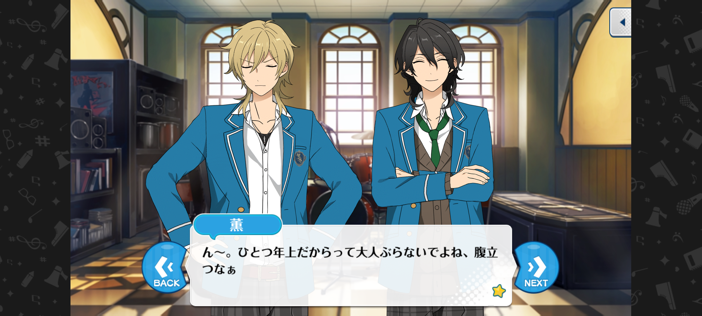
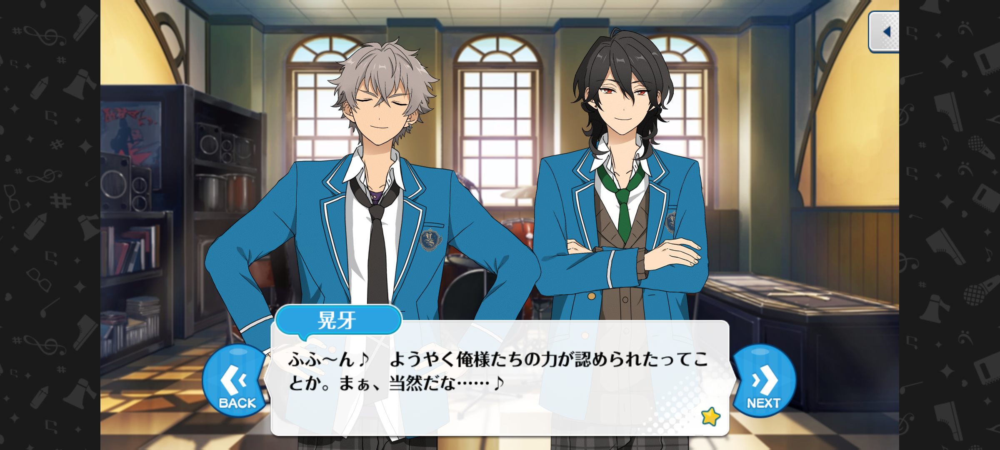
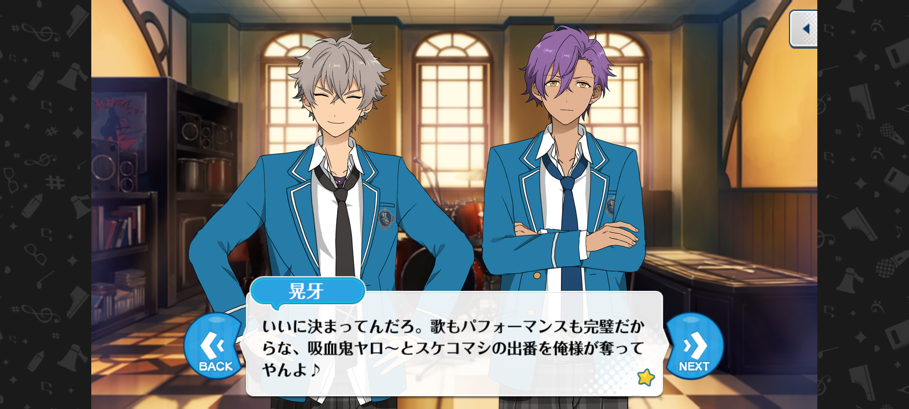
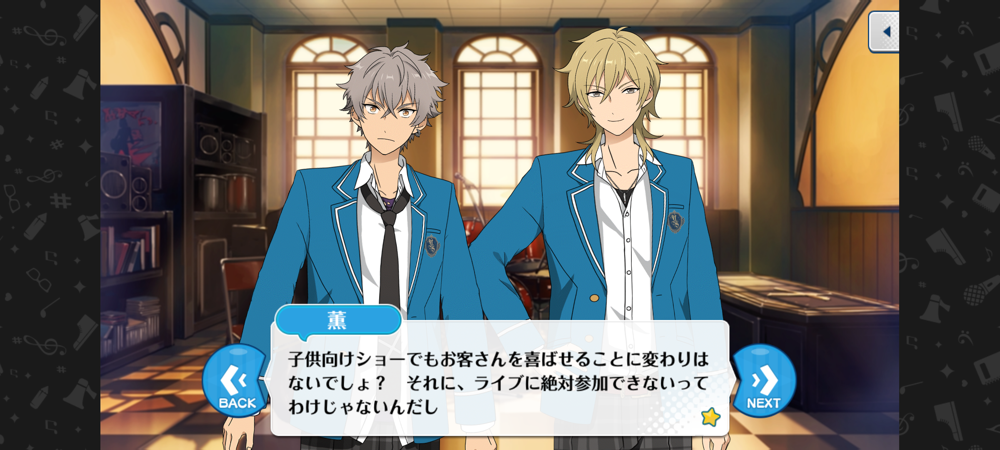

Scout! Amusement Park Show
Amusement Park Show – Chapter 2


Location: Light Music Clubroom

Rei: Ohoho. Has Kaoru-kun finally come to his senses? Come, let me give you some praise...♪
Kaoru: Ehhh~? Don't go acting all high and mighty when you're only a year older than me. You're gonna make me mad.
Look, even Wan-chan's staring over here like he's waiting for someone to explain what's going on.
I'd rather not have him feeling left out, especially with all his barking and biting. Can't we just get to the point?
Rei: Kukuku. But Kaoru-kun is a boy too, is he not? Or is being teased a little embarrassing for you?♪
Kaoru: Sakuma-san, don't go messing with me like that. Why don't you go bother Wan-chan over there~?
I'm not going to fall for your little tricks. I'm not nearly as easy to wind up as he is.
Koga: Enough with the damn Wan-chan this and Wan-chan that! Quit messin' with me, Hakaze...senpai!
Kaoru: Hahaha! You try to bite me, yet you still call me senpai. You're so cute, Wan-chan~. Keep being a good boy and I'll give you some beef jerky.♪
Koga: GYAH, I’LL KILL YOU PLAYBOY!
Rei: Kukuku. What a heartwarming sight...♪ Now then, if I might have everyone's attention for a moment, I believe we can finally get down to business.
Wanko, Kaoru-kun, would you kindly lend me your ears for a little while?
Adonis: Oogami. Listening to Sakuma-senpai should help you calm down. I am sure you will find what he has to say worthwhile.
Koga: ...Tch. You're not gettin' off so easy next time, Hakaze-senpai.
So, you mentioned an amusement park live. Did you put in a request to perform there or somethin'?

Rei: Indeed. We've been rather busy with idol activities as of late, haven't we? It seemed only natural that we put in a request.
Koga: Fufuu~♪ So our strength has finally been recognised, huh? Well, it's about time...
Kaoru: My, someone's looking pleased with himself. If you had a tail, I bet you'd be wagging it hard enough to generate electricity.
Sounds good to me, though. Performing at an amusement park means there'll probably be plenty of cute girls around to admire~♪
Koga: Oh my god. Is that seriously all you think about?
Kaoru: It's a pretty great incentive, isn't it? After all, I only became an idol so I could meet lots of girls, you know?
You might have different reasons for being an idol, Koga-kun, but I'm still looking forward to performing together. No need to be so mean~♪
Koga: Fuck off. When you say stuff like that with that stupid smile on your face, it just pisses me off more.
Hakaze-senpai, when we perform, you'd better actually show up instead of running off after some girl and her ass. If you can't even manage that—
Kaoru: Back off with the threats, Wan-chan.
I can take things seriously when I need to. Girls might be my number one priority, but... it'd be pretty pathetic if I couldn't show my best side as a senpai, wouldn't it?
So don't worry.
When we all take the stage together as UNDEAD, I'll show you just how serious I am.♪
Time: Time passes...

Adonis: Oogami. Are you feeling alright?
Koga: It's all settled! We've got the song and choreography down, so I’m gonna steal the spotlight from that vampire bastard and the playboy.♪
Adonis: You seem very happy. It makes me happy to see my friends enjoying themselves, too.
However, the actual performance is tomorrow. We should finish up here and start getting ready for it.
Koga: Ah... Yeah, you're right. Wouldn't do us any good if we ended up collapsing before tomorrow. Let's call it a day.
Rei: Wanko... And Adonis-kun, too. Were the two of you practising together, by any chance?
Koga: Whoa! Nah, we were just finishin' up. What, you wanna join us or somethin'?
Rei: …
Koga: Oi, aren't you supposed to come alive once the sun goes down, vampire bastard? You doin' alright?
Tomorrow's the big day, so you need to be in tip-top shape.
Me, Adonis and Hakaze-senpai can take care of everything else, so you just get some rest in that coffin of yours.
You'd better be bright-eyed and bushy-tailed tomorrow morning! I know the sun's your weakness, but when the big day comes, you gotta—
Kaoru: Koga-kun.
Koga: W-what?! Don't interrupt me when I'm talkin'!
Kaoru: Sorry, Koga-kun. I know you've got a lot you want to say, but could you listen to Sakuma-san for a moment?
Koga: ...Tch. Fine. Make it quick.
Rei: I'm afraid I've made a mistake regarding our amusement park live. I've registered us for a performance intended for children.
That is why I came here to speak with you all.
Koga: …What? The fuck you mean by “mistake”?!
Then what about our performance...? All that practising... Was it all for nothing?! For fuck’s sake!
Rei: I knew how much you were looking forward to this, Wanko. That is why I've been asking around to see if there might be something we can do.
We may not be able to perform on a proper stage, but I am confident that there will be some way for us to put on a show.
I've also spoken with the Little Miss, and she's doing everything she can to find a solution.
However, nothing has been decided just yet. I want you to understand that there is still a possibility we won't be able to perform at all.
And so, I'll leave the decision to the three of you. Please consider whether you'd still like to go ahead with tomorrow's performance at the amusement park.
Your opinions all carry equal weight. Nothing matters more to me than what each of you wants.

Kaoru: I say we do it.
Koga: ...Are you fucking serious?! Why'd you say that?!
Kaoru: Even if it's a show for children, our job is still to make the audience happy, right? And it's not like we're completely incapable of putting on a performance just because it's not a conventional live.
If we put our heads together, I'm sure we can make something work. So why not give it a shot?
Adonis: I agree with Hakaze-senpai.
My body is rather large, and I worry that I might frighten the children. To be honest, I'm not even sure whether someone like me is suited to performing at an event like that.
However, if I withdraw now, I will never be able to give the audience the satisfaction they deserve. That is why I want to go ahead with it.
Koga: Adonis, Hakaze-senpai…
Gyaaaah! You two know I can't exactly back out when you go saying stuff like that!
Hell yeah! I'm gonna give this everything I've got! You little munchkins better be ready for us...!!